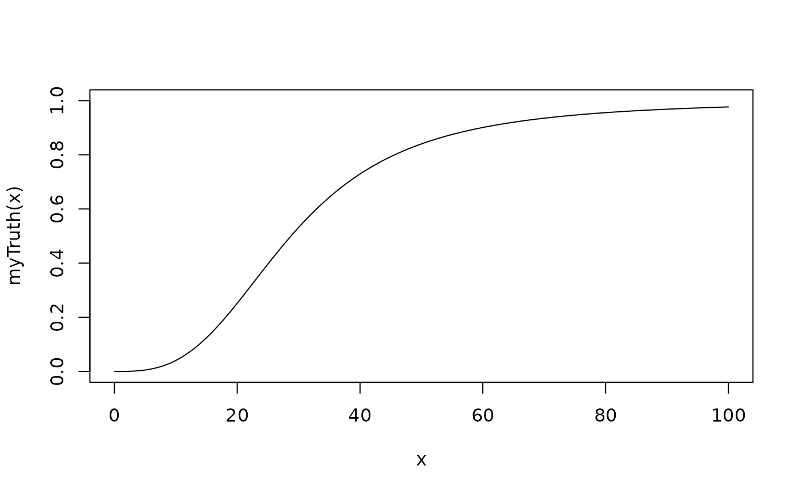

Simulate outcomes from a time-to-DLT augmented CRM design (DADesign)
Source: R/Design-methods.R
simulate-DADesign-method.RdSimulate outcomes from a time-to-DLT augmented CRM design (DADesign)
Usage
# S4 method for DADesign
simulate(
object,
nsim = 1L,
seed = NULL,
truthTox,
truthSurv,
trueTmax = NULL,
args = NULL,
firstSeparate = FALSE,
deescalate = TRUE,
mcmcOptions = McmcOptions(),
DA = TRUE,
parallel = FALSE,
nCores = min(parallel::detectCores(), 5),
...
)Arguments
- object
the
DADesignobject we want to simulate data from- nsim
the number of simulations (default: 1)
- seed
see
setSeed- truthTox
a function which takes as input a dose (vector) and returns the true probability (vector) for toxicity and the time DLT occurs. Additional arguments can be supplied in
args.- truthSurv
a CDF which takes as input a time (vector) and returns the true cumulative probability (vector) that the DLT would occur conditioning on the patient has DLTs.
- trueTmax
add documentation here
- args
data frame with arguments for the
truthfunction. The column names correspond to the argument names, the rows to the values of the arguments. The rows are appropriately recycled in thensimsimulations. In order to produce outcomes from the posterior predictive distribution, e.g, pass anobjectthat contains the data observed so far,truthcontains theprobfunction from the model inobject, andargscontains posterior samples from the model.- firstSeparate
enroll the first patient separately from the rest of the cohort? (not default) If yes, the cohort will be closed if a DLT occurs in this patient.
- deescalate
deescalation when a DLT occurs in cohorts with lower dose level.
- mcmcOptions
object of class
McmcOptions, giving the MCMC options for each evaluation in the trial. By default, the standard options are used.- DA
document or rename this parameter to make it more meaningful
- parallel
should the simulation runs be parallelized across the clusters of the computer? (not default)
- nCores
how many cores should be used for parallel computing? Defaults to the number of cores on the machine (maximum 5)
- ...
not used
Value
an object of class Simulations
Examples
# nolint start
# Define the dose-grid and PEM parameters
emptydata <- DataDA(doseGrid=c(0.1, 0.5,1, 1.5, 3, 6,
seq(from=10, to=80, by=2)),Tmax=60)
# Initialize the mDA-CRM model
npiece_=10
Tmax_=60
lambda_prior<-function(k){
npiece_/(Tmax_*(npiece_-k+0.5))
}
model<-DALogisticLogNormal(mean=c(-0.85,1),
cov=matrix(c(1,-0.5,-0.5,1),nrow=2),
ref_dose=56,
npiece=npiece_,
l=as.numeric(t(apply(as.matrix(c(1:npiece_),1,npiece_),2,lambda_prior))),
c_par=2)
# Choose the rule for dose increments
myIncrements <- IncrementsRelative(intervals=c(0,20),
increments=c(1,0.33))
# Choose the rule for selecting the next dose
nextMaxDose <- maxDose(myIncrements,data=emptydata)
myNextBest <- NextBestNCRM(target=c(0.2,0.35),
overdose=c(0.35,1),
max_overdose_prob=0.25)
# Choose the rule for the cohort-size
mySize1 <- CohortSizeRange(intervals=c(0, 30),
cohort_size=c(1, 3))
mySize2 <- CohortSizeDLT(dlt_intervals=c(0, 1),
cohort_size=c(1, 3))
mySize <- maxSize(mySize1, mySize2)
# Choose the rule for stopping
myStopping1 <- StoppingTargetProb(target=c(0.2, 0.35),
prob=0.5)
myStopping2 <- StoppingMinPatients(nPatients=50)
myStopping <- (myStopping1 | myStopping2)
# Choose the safety window
mysafetywindow=SafetyWindowConst(c(6,2),7,7)
# Initialize the design
design <- DADesign(model=model,
increments=myIncrements,
nextBest=myNextBest,
stopping=myStopping,
cohortSize=mySize,
data=emptydata,
safetyWindow=mysafetywindow,
startingDose=3)
## set up truth curves
myTruth <- probFunction(model, alpha0 = 2, alpha1 = 3)
curve(myTruth(x), from=0, to=100, ylim=c(0, 1))

onset <- 15
exp_cond.cdf<-function(x){
1-(pexp(x,1/onset,lower.tail=FALSE)-pexp(28,1/onset,lower.tail=FALSE))/pexp(28,1/onset)
}
#set up simulation settings
options <- McmcOptions(burnin=100,
step=1,
samples=2000)
mySims <- simulate(design,
args=NULL,
truthTox=myTruth,
truthSurv=exp_cond.cdf,#piece_exp_cond.cdf,
trueTmax=80,
nsim=2,
seed=819,
mcmcOptions=options,
firstSeparate=TRUE,
deescalate=FALSE,
parallel=TRUE,
nCores=2)
# nolint end